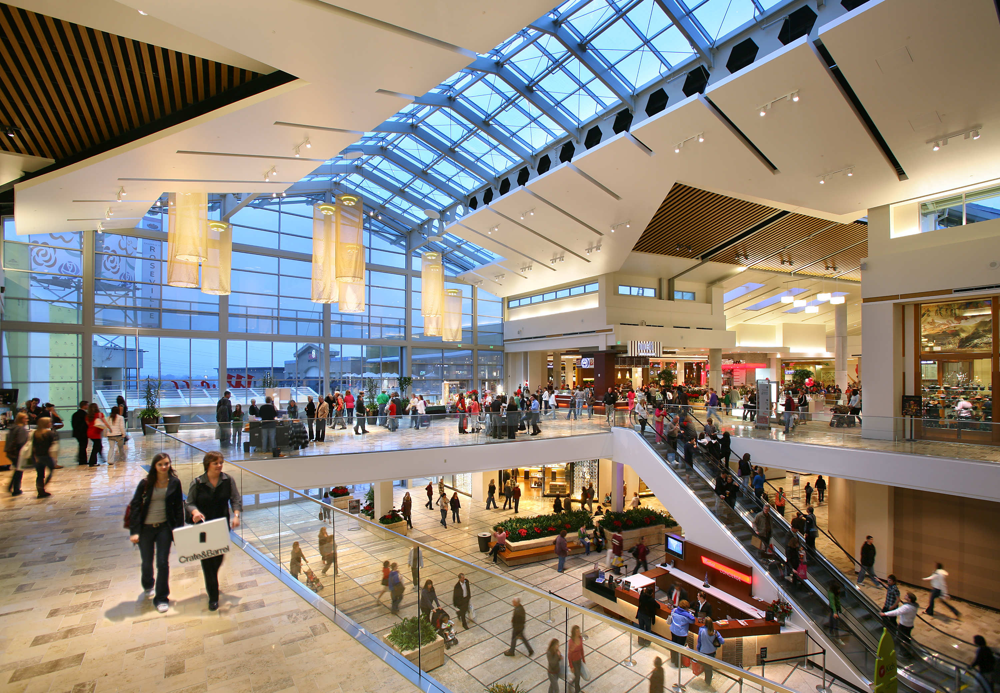
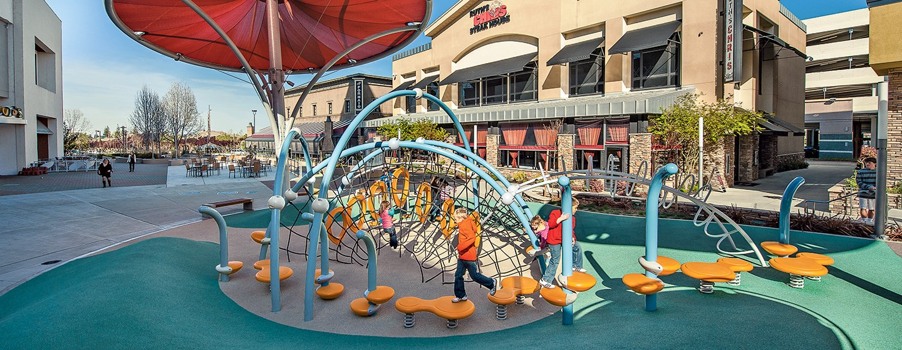

This is the Galleria Mall in Roseville California. It is one of the largest malls in California. If you need something and don't know where to get it then more than likely you will be able to find it at the mall. The Galleria has been expanded a lot in the recent years. Plus, the fountains, which is an outside mall was built across the street in the past few years. The mall is a great place to go for reasons other than just shopping. For example, during Christmass there is a Santa that will be at the mall and countless people take their children to go see him. When I was younger I used to go there and it was always a great experience to be able to tell Santa in person what you want for Christmass. Plus, there is a play ground structure out front of the main entrance that children love to play on. WHen I was younger my Mom would go shop while my Dad would watch my sister and I play on the play structure. Some nights the Galleria will have movie nights. For example, they played Frozen on a projector when it forst came out and it was packed with a bunch of children.
